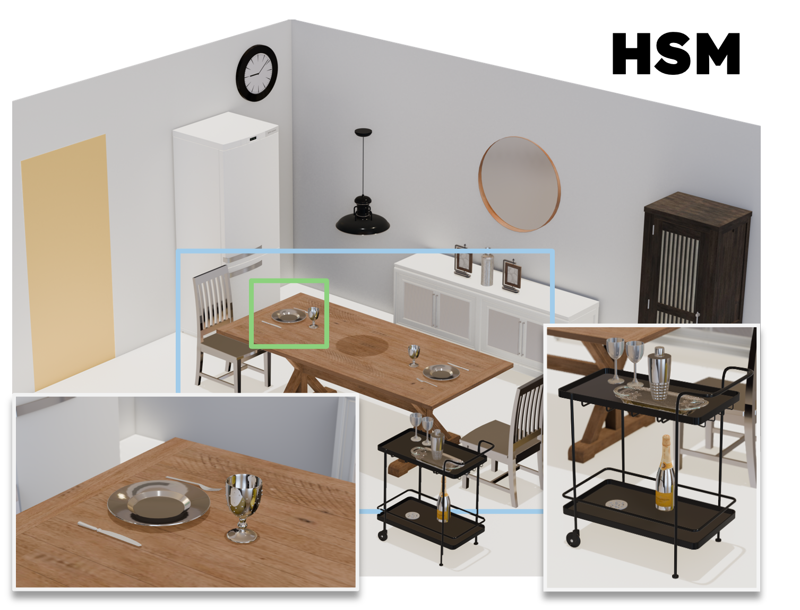
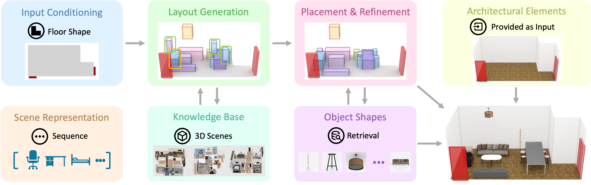

|
Hou In (Derek) Pun hip4 {at} sfu "dot" ca Hou In (Derek) Pun is a computer science researcher and software developer specializing in AI, XR, and intelligent system design. He is dedicated to translating cutting-edge AI concepts into scalable, user-centric technology solutions. Derek recently completed his M.Sc. in Computing Science at Simon Fraser University (GrUVi & 3DLG labs), advised by Prof. Manolis Savva. Previously, he earned an M.Sc. in Immersive Technologies from the University of Bristol (2023) and a B.Sc. in AI & Computer Science from the University of Sheffield (2022). |
{kind=link}
Recent Highlights
|
Selected Projects |
|
🌙 SoliSleep: Nest Hub 2 Analysis
Keywords: Python, Google Fit API, Signal Processing, IoT A pipeline unlocking granular sleep insights from Google Nest Hub 2's contactless Soli radar. Bridges the Google Fit API with the YASA engine to reveal deep sleep metrics often hidden in Google Fit reports. |
|
☕ Slime Valley VR
Keywords: Unity, C#, VR Interaction, Spatial Audio An immersive sandbox set in a fantasy café. Designed as a cozy virtual retreat, it allows players to unwind and interact with playful, physics-driven slimes in a rich spatial audio environment. |
ResearchDerek's work focuses on AI-driven scene generation, leveraging Vision Language Models (VLMs) and hierarchical structures to synthesize realistic 3D environments. |
|

|
HSM: Hierarchical Scene Motifs for Multi-Scale Indoor Scene Generation
Hou In Derek Pun, Hou In Ivan Tam , Austin T. Wang, Xiaoliang Huo, Angel X. Chang, Manolis Savva 3DV, 2026 project page / code / arXiv |

|
SceneEval: Evaluating Semantic Coherence in Text-Conditioned 3D Indoor Scene Synthesis
Hou In Ivan Tam , Hou In Derek Pun, Austin T. Wang, Angel X. Chang, Manolis Savva WACV, 2026 project page / code / arXiv |
|

|
Survey on Compositional 3D Indoor Scene Generation
Hou In Ivan Tam , Hou In Derek Pun, Austin T. Wang, Xiaohao Sun, Qirui Wu, Han-Hung Lee, Angel X. Chang, Manolis Savva 2026 project page / PDF |

|
SceneMotifCoder: Example-driven Visual Program Learning for Generating 3D Object Arrangements
Hou In Ivan Tam , Hou In Derek Pun, Austin T. Wang, Angel X. Chang, Manolis Savva 3DV, 2025 project page / code / arXiv |
|
This template is borrowed from Jon Barron's website. |